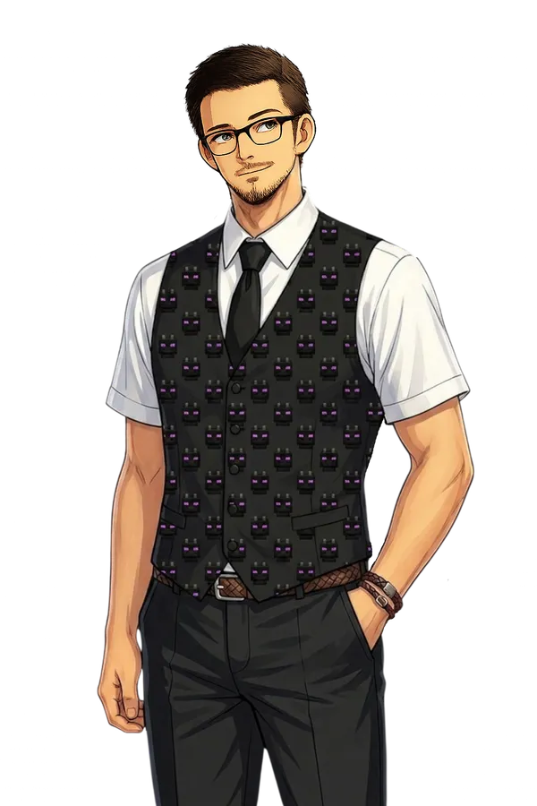
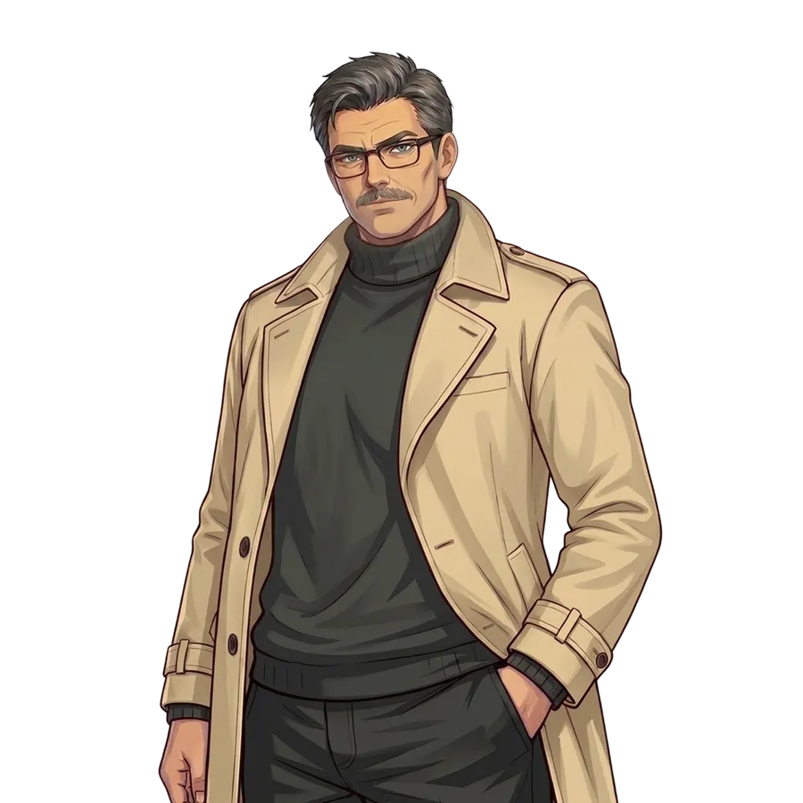

Sprites
Chaque personnage a des expressions de base (dossier racine) et des tenues (sous-dossiers). Une tenue n’est visible qu’une fois atteint le chapitre où elle est portée pour la première fois.
Spoiler : Prologue — 1 image(s)

Spoiler : Arc I — 5 image(s)


Spoiler : Arc II — 5 image(s)


Spoiler : Arc III — 6 image(s)


Spoiler : Arc IV (et scènes 4.5) — 5 image(s)


Spoiler : Fin A2 — 6 image(s)


Spoiler : Fin A1 — 1 image(s)
Spoiler : Fin A3 — 10 image(s)


Spoiler : Coulisses et contenus inutilisés — 6 image(s)


Spoiler : Route A (arc VII) — 7 image(s)


Spoiler : Fin A2 ou Fin A1 — 1 image(s)

Spoiler : Prologue — 1 image(s)
Spoiler : Arc I — 6 image(s)


Spoiler : Arc II — 7 image(s)


Spoiler : Arc III — 6 image(s)


Spoiler : Arc IV (et scènes 4.5) — 10 image(s)


Spoiler : Arc V — 2 image(s)
Spoiler : Arc VI — 2 image(s)


Spoiler : Fin A2 — 7 image(s)


Spoiler : Fin A3 — 1 image(s)
Spoiler : Coulisses et contenus inutilisés — 5 image(s)

Spoiler : Route A (arc VII) — 7 image(s)


Spoiler : Route B (arc VII) — 7 image(s)


Spoiler : Fin A2 ou Fin A1 — 3 image(s)


Spoiler : Route B (arc VII) ou Fin B1 — 4 image(s)


Spoiler : Arc II — 2 image(s)

Spoiler : Arc III — 6 image(s)


Spoiler : Arc IV (et scènes 4.5) — 11 image(s)


Spoiler : Arc V — 5 image(s)


Spoiler : Arc VI — 3 image(s)


Spoiler : Fin A1 — 1 image(s)
Spoiler : Fin A3 — 6 image(s)


Spoiler : Fin A2 — 3 image(s)


Spoiler : Coulisses et contenus inutilisés — 21 image(s)
- cold disappointment
-
 controlled annoyance
controlled annoyance - defense frustration
-
 feigned innocence
feigned innocence - quiet jalousy
-

feigned innocence -
 quiet jalousy
quiet jalousy -

older neutral - knowing smirk
-
 feigned innocence
feigned innocence -
 neutral laplage
neutral laplage -
 neutral
neutral -
 picture
picture -
 thumb up laplage
thumb up laplage -
 controlled annoyance
controlled annoyance -
 quiet jalousy
quiet jalousy -
 controlled annoyance
controlled annoyance - feigned innocence
-
 quiet jalousy
quiet jalousy -
 controlled annoyance
controlled annoyance -
 quiet jalousy
quiet jalousy
Spoiler : Route B (arc VII) ou Fin B2 — 1 image(s)
Spoiler : Route A (arc VII), Route B (arc VII), Fin B2 ou Fin B1 — 2 image(s)


Spoiler : Route A (arc VII), Route B (arc VII), Fin B2 ou Fin A1 — 1 image(s)
Spoiler : Route A (arc VII), Route B (arc VII), Fin B2, Fin A1 ou Fin B1 — 1 image(s)
Spoiler : Arc I — 5 image(s)


Spoiler : Arc II — 3 image(s)

Spoiler : Arc III — 5 image(s)


Spoiler : Arc IV (et scènes 4.5) — 4 image(s)


Spoiler : Arc V — 4 image(s)

Spoiler : Fin A1 — 1 image(s)
Spoiler : Fin A3 — 4 image(s)

Spoiler : Fin A2 — 2 image(s)

Spoiler : Fin B2 — 1 image(s)

Spoiler : Coulisses et contenus inutilisés — 10 image(s)


Spoiler : Route A (arc VII) — 2 image(s)

Alexandre
Section intitulée « Alexandre » Spoiler : Prologue — 1 image(s)
Spoiler : Arc I — 3 image(s)
Spoiler : Arc II — 4 image(s)
Spoiler : Arc III — 4 image(s)
Spoiler : Arc IV (et scènes 4.5) — 6 image(s)


Spoiler : Arc V — 3 image(s)
Spoiler : Fin A1 — 4 image(s)


Spoiler : Fin A2 — 3 image(s)

Spoiler : Coulisses et contenus inutilisés — 18 image(s)
- blunt seriousness
- genuine laughter
- blunt seriousness
-
 genuine laughter
genuine laughter -
 neutral
neutral -
 peace
peace -
 supportive encouragement
supportive encouragement - genuine laughter
- blunt seriousness party
-
 genuine laughter party
genuine laughter party - neutral party
-
 peace party
peace party -
 supportive encouragement party
supportive encouragement party -
 teasing skepticism party
teasing skepticism party -
 supportive encouragement
supportive encouragement - akward realization
- genuine laughter
-
 peace
peace
Spoiler : Arc I — 1 image(s)

Spoiler : Arc II — 1 image(s)

Spoiler : Arc III — 1 image(s)

Spoiler : Arc IV (et scènes 4.5) — 2 image(s)

Spoiler : Arc VI — 1 image(s)
Spoiler : Fin A1 — 1 image(s)

Spoiler : Fin A3 — 3 image(s)


Spoiler : Fin A2 — 1 image(s)
Spoiler : Coulisses et contenus inutilisés — 9 image(s)


Monsieur Laplage
Section intitulée « Monsieur Laplage » Spoiler : Prologue — 1 image(s)


Spoiler : Arc IV (et scènes 4.5) — 4 image(s)


Spoiler : Arc V — 1 image(s)

Spoiler : Fin A3 — 4 image(s)

Spoiler : Route A (arc VII) — 2 image(s)

Spoiler : Coulisses et contenus inutilisés — 2 image(s)

Autres personnages
Section intitulée « Autres personnages » Spoiler : Arc V — 2 image(s)

Spoiler : Arc VI — 1 image(s)
Spoiler : Fin A3 — 6 image(s)


Spoiler : Coulisses et contenus inutilisés — 2 image(s)